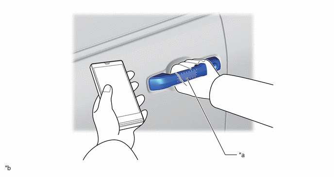
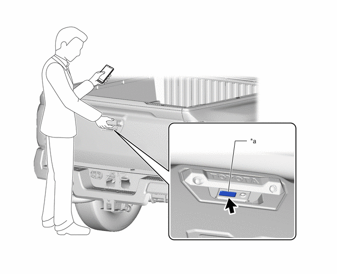
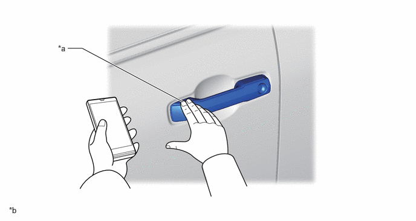
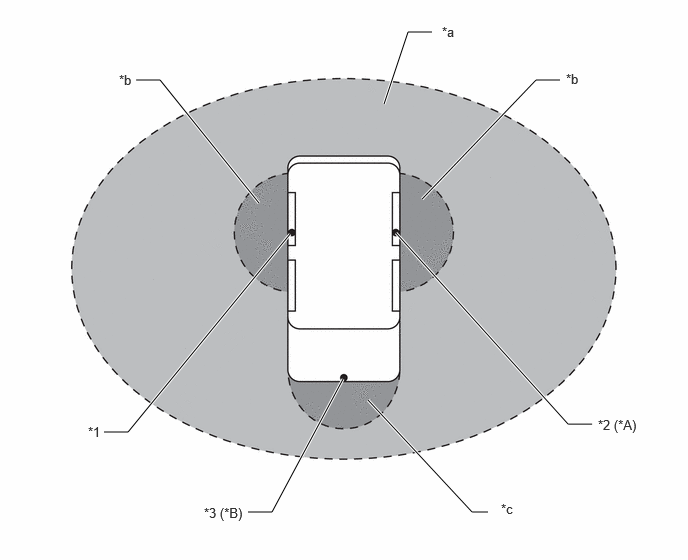

- A door is locked/unlocked via wireless remote control function.
- A door is locked/unlocked via a door outside handle door lock/unlock sensor.
| Last Modified: 10-07-2025 | 6.11:8.1.0 | Doc ID: RM100000002KHRH |
| Model Year Start: 2024 | Model: Tacoma | Prod Date Range: [03/2024 - ] |
| Title: THEFT DETERRENT / KEYLESS ENTRY: DIGITAL KEY SYSTEM: DIGITAL KEY CONTROL; 2024 - 2026 MY Tacoma Tacoma HV [03/2024 - ] | ||
DIGITAL KEY CONTROL
FUNCTION
(a) The following functions can be used based on the signal from the smartphone.
|
Function |
Outline |
|---|---|
|
*1: Models with power tail gate system
*2: Gasoline models *3: HEV models *4: Models with automatic transmission *5: Models with manual transmission |
|
|
Door unlock function |
Unlocks all of the doors by performing an unlock operation using a smart device or just by carrying a smart device. |
|
Door lock function |
Locks all of the doors by performing a lock operation using a smart device or just by carrying a smart device. |
|
Tail gate lock/unlock function*1 |
Lock/unlocks the tail gate by performing a lock/unlock operation using a smart device. |
|
Ignition function |
Starts the engine*2 or hybrid system*3 by changing the power source mode by combined operation of the ignition switch and brake pedal*4 or clutch pedal*5. |
(1) Door unlock function
- When a smartphone is carried or a door handle is
operated to turn on the unlock sensor inside a
vehicle exterior detection area, all of the doors
unlock. When all of the doors unlock, the hazard
lights flash twice, the wireless door lock buzzer
sounds twice, and the smart device vibrates as an
answer back. 
*a
Unlock Sensor
*b
The illustrations shown are examples only.
- When the tail gate opener switch of the tail gate
opener switch assembly is operated or carried in the
tail gate exterior detection area, the lock of the
tail gate lock assembly is released. When all of the
doors unlock, the hazard lights flash twice, the
wireless door lock buzzer sounds twice, and the smart
device vibrates as an answer back. (Models with power
tail gate system)
NOTICE:
If the latch of the tail gate lock assembly does not release after the tail gate opener switch assembly is pressed, hold the tail gate opener switch until the latch releases.
*a
Opener Switch (Tail Gate Opener Switch Assembly)
-
-
(2) Door lock function
- When a smartphone is carried or a door handle is
operated by the smart device to turn on the lock
sensor inside a vehicle exterior detection area, all
of the doors lock. When all of the doors lock, the
hazard lights flash once, the wireless door lock
buzzer sounds once, and the smart device vibrates as
an answer back. 
*a
Lock Sensor
*b
The illustrations shown are examples only.
- When the lock switch of the tail gate opener
switch assembly is operated or carried in the tail
gate exterior detection area, all of the doors lock.
When all of the doors lock, the hazard lights flash
once, the wireless door lock buzzer sounds once, and
the smart device vibrates as an answer back. (Models
with power tail gate system)

*a
Lock Switch (Tail Gate Opener Switch Assembly)
-
-
(3) Ignition function
- By pressing the engine switch*1 or power switch*2
in accordance with the brake operation when carrying
a smartphone in the interior detection area, the
engine*1 or hybrid system*2 can be started.
- *1: Gasoline models
- *2: HEV models
(b) Bluetooth Communication Area
NOTICE:
- Make sure to operate the digital key system while carrying a smart device.
- When operating from outside of the vehicle, be careful not to bring a smart device too close to the vehicle. Depending on the location of a smart device or the way it is held during the operation, the smart device may not be detected correctly and the system may not operate correctly. The automatic alarm system may operate incorrectly or the key lock out prevention function may not operate correctly.
- If a smart device is brought too close to a door window, or it is near the ground or placed on a high place when locking/unlocking the door, the digital key system may not operate correctly even if the smart device is within the operating range.
- If a large amount of water is applied to a door handle due to a car wash or heavy rain while a smart device is within the operating range, the door may lock/unlock unintentionally. Even if the door unlocks, if no door open/close operations are performed, the door will be automatically locked after approximately 30 seconds.
- When the smart device is within the operating range, anybody other than a person carrying an electrical key transmitter sub-assembly can lock/unlock a door. However, door lock/unlock is only possible for a door which detects a smart device.
Entry Function
|
*A |
Models with Front Passenger Side Door Electrical Key Antenna |
*B |
Models with Power Tail Gate System |
|
*1 |
Sniffer Antenna (BLE Door Digital Key Receiver Assembly (Driver Seat)) |
*2 |
Sniffer Antenna (BLE Door Digital Key Receiver Assembly (Front Passenger Seat)) |
|
*3 |
Sniffer Antenna (BLE Luggage Digital Key Receiver Assembly (Tail Gate)) |
- |
- |
|
*a |
Bluetooth Communication Area (Smart Device Display Operation Required) |
*b |
Exterior Operation Area (Smart Device Display Operation Not Required) |
|
*c |
Tail Gate Exterior Operation Area (Smart Device Display Operation Not Required) |
- |
- |
Start Function

|
*1 |
BLE Indoor Digital Key Receiver Assembly |
- |
- |
|
*a |
Bluetooth Communication Area (Smart Device Display Operation Not Required) |
- |
- |
NOTICE:
The digital key system may not operate correctly or the operating range may decrease in the following situations:
- When the battery of the smart device is depleted
- When the vehicle is near a TV tower, electric power plant, gas station, radio station, large display, airport or other facility that generates strong radio waves or electrical noise
- When another "Wi-Fi" device is being used in close proximity
- When the smart device is near a wireless communication device (mobile phone, cordless phone, etc.), a radio wave type wireless remote control, a computer or portable information device, digital audio player, portable game.
- When the electrical key transmitter sub-assembly is covered or in contact with a metallic object
- There is a device that outputs high-voltage or noise near the digital key
- When a film, etc. which contains metal has been applied to the rear window glass
- When the smart device is placed near an electronic device such as a charger
- When parking in a pay parking facility
- When the smart device is covered or in contact with a metallic object such as a metal smartphone cover, a card covered with metal such as aluminum foil, a tobacco box using aluminum foil, coins, media (CD, DVD, etc.), metal objects (body warmer, etc.).
(c) Power-saving function
(1) Battery-saving function
- Since the digital key system forms a detection area by periodically transmitting request signals, if the vehicle is left for a long amount of time, there is a possibility of the auxiliary battery becoming depleted. Also, if the smart device is in the vehicle exterior detection area, the auxiliary battery may deplete due to the continuous BLE connection. The following controls are set to prevent the battery from becoming depleted.
Battery-saving Control
|
A |
When the ignition switch is turned off and not turned to ON for 5 days (120 hours) or more, output of the sniffer antenna (BLE door digital key receiver assembly) is stopped. However, as the lock/unlock sensor is enabled, it is possible to perform a lock/unlock operation by touching the lock/unlock sensor of the door outside handle assembly. |
|
B |
When the ignition switch is turned off and not turned to ON for 14 days (336 hours) or more, output of the sniffer antenna (BLE door digital key receiver assembly) is stopped and the BLE connection is canceled. However, as the driver door lock/unlock sensor is enabled, it is possible to transition to "A" by touching the lock/unlock sensor of the door outside handle assembly. |
|
C |
When the smart device is left outside the exterior operation area for 10 minutes or more, output of the sniffer antenna (BLE door digital key receiver assembly) is stopped. |
Battery-saving Control Stop Conditions
|
A |
The ignition switch to ON. |
|
B |
The ignition switch to ON. |
|
C |
If any of the following conditions are met, the digital key system returns to normal operation from battery saving control. |
- In the following situations, the cancellation may
take time.
- When there is no operation for 10 minutes or more within approximately 5 meters or less from the vehicle.
- When the vehicle has not been operated for 5 days or more.